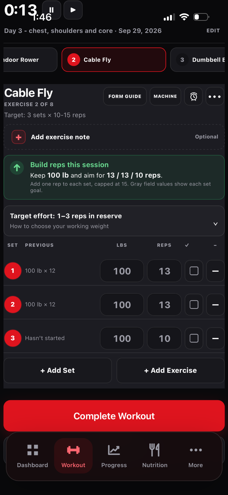
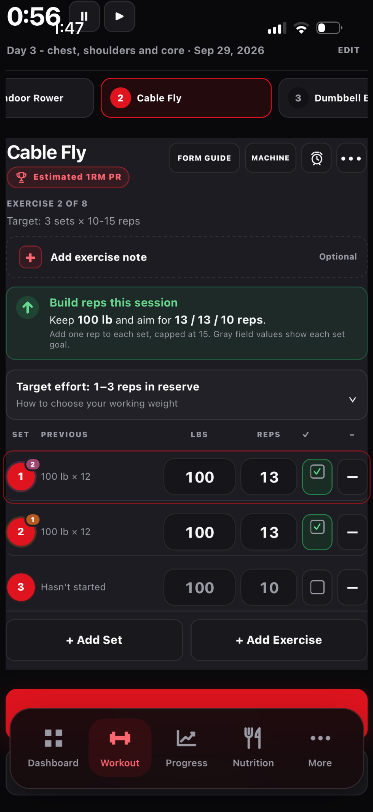

Log a workout
Complete sets create the history used by progress charts and guidance.
How to use it
- Open Workout, choose a saved plan and start a day.
- Record weight and reps for each working set; add RPE when useful.
- Use the rest timer and edit sets as needed.
- Complete the session to save it to Workout History.
See it in Level Up

